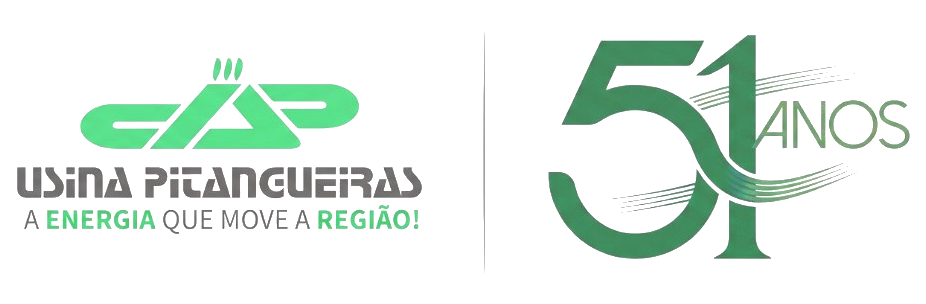

17
17 RELATÓRIOS CONSOLIDADOS
+22k Registros • Safra 2026
Categoria
Nome
0 reg.
Data
Abrir Painel ➜
01
02
03
04
05
06
07
08
09
10
11
12
13
14
15
16
17
Passe o mouse para inspecionar • Clique para abrir o painel executivo
⊞
Painéis Operacionais Consolidados
17 módulos técnicos por etapa agronômica • Safra 2026
🔍
🌱 Preparo de Solo
2 módulos técnicos
01
Subsolagem
367 reg.
09/09
02
Canteirização
389 reg.
27/10
🚜 Operação de Plantio & Precisão
4 módulos técnicos
03
Sulcação Técnica
2.820 reg.
27/10
04
Dosagem no Sulco
1.279 reg.
27/10
05
Abertura da Asa
979 reg.
26/09
06
Paralelismo GNSS
2.453 reg.
28/09
🌾 Qualidade de Muda & Cobrição
6 módulos técnicos
07
Qualidade da Muda
2.710 reg.
27/10
08
Viabilidade de Gemas
2.708 reg.
27/10
09
Quantidade de Cana
2.579 reg.
27/10
10
Dosagem na Cobrição
925 reg.
27/10
11
Cobrição do Sulco
2.020 reg.
27/10
12
Arremate & Acabamento
807 reg.
27/10
🌿 Tratos Culturais & Fitossanidade
2 módulos técnicos
13
Aplicação de Herbicida
30 reg.
20/10
14
Infestação de Broca
116 reg.
30/09
🛡️ SSOMA, Frotas & Gestão Operacional
3 módulos técnicos
15
Checklist Veicular
1.207 reg.
27/10
16
Área de Vivência
347 reg.
27/10
17
5S & Gestão TPL
171 reg.
27/10
🔍
Nenhum módulo encontrado
Tente buscar por outro termo ou limpe o campo de busca.